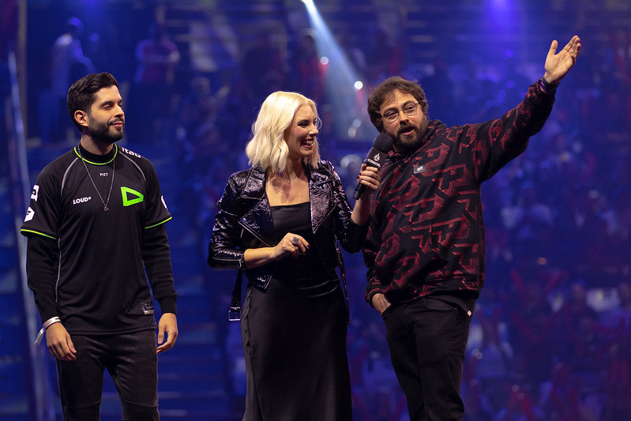

.png)


LoL: Fundador e CEO da pain comentam sobre formato do CBLOL:
“não gostamos”
O formato do CBLOL foi alvo de discussão por muitos anos e até hoje, mesmo com a dupla eliminação implantada, ainda discussões podem ser feitas ao redor dele, visando detalhes para torná-lo ainda melhor. Em participação no Md3 Podcast, o fundador e o CEO da paiN Gaming, Paada e Thomas, comentaram sobre o atual formato do torneio.
"Não gostamos muito desse formato. Para mim, a Fase de Pontos não define muita coisa. Tem um ponto que eu acredito ser debatível, é o seguinte, a paiN foi para duas finais pela Upper Bracket, é o que você não ganha com isso, nós perdemos com isso na real, porque o time que vem debaixo, ele vem embalado porque ganhou de todo mundo. Enquanto isso, nós ganhamos pela Upper e temos uma semana a mais, mas ela é bem pouco proveitosa, porque ninguém está treinando. Na nossa visão, o time que vai pela Upper tem uma desvantagem."
Na sequência, Thomas explicou o que ele acredita que deveria ser dado como vantagem ao time que chegar à Grande Final do CBLOL pelo chaveamento superior. “Uma vitória a mais é demais, mas por exemplo, escolher todos os lados da série, nós cogitamos, começar com 1×0 talvez seja demais.” Para mostrar seu ponto, o CEO dos Tradicionais usa o 2º split deste ano como exemplo, onde a paiN chegou à decisão pela Upper Bracket, vencendo a própria LOUD no processo. Na sua visão, considerando também o formato de “Dupla Eiminação”, a paiN deveria também perder duas vezes para estar totalmente fora da disputa pela taça. “A LOUD perdeu para nós, voltou e foi campeã, nós perdemos uma vez e já era. Acho que é um assunto debatível, porque é muito pouco o que se tem de vantagem hoje”, afirma. O fundador da paiN, Paada, afirma que deve-se buscar o equilíbrio entre o que é justo e o que é bom para o espetáculo. Ele cita a Copa do Mundo que é eliminação direta, o que ele diz ser bom para o espetáculo, mas se um time “acordar num dia ruim, já era.” “Nós temos a sensação que, hoje, é melhor ir para a Final pela Lower”, declara Thomas. Um dos participantes do debate, Djoko, sugere que uma solução para isso seria que ambos os times que chegaram à Grande Final já estejam garantidos para o Worlds, o que tornaria a ida pela Upper Bracket interessante pois é a garantia mais cedo de vaga para um torneio internacional. “Além disso, o campeão iria direto para a Fase de Grupos e o vice vai para a Fase de Entrada”, completa.